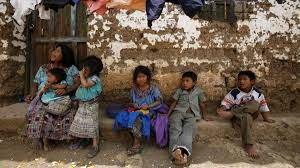

La desnutrición es una enfermedad que es producto de una dieta inadecuada, que no permite la absorción de los nutrientes necesarios para mantener el equilibrio del organismo, ésta ocurre cuando no se ingieren alimentos y la falta de consumo de éstos hace que el cuerpo de una persona gaste más energías calóricas de las que consume. Es una de las enfermedades más comunes que existen y está muy ligada a la falta de recursos necesarios para comprar y consumir los alimentos necesarios para tener una dieta adecuada y balanceada que permita el correcto funcionamiento del organismo..
Desnutrición primaria: Se determina si la ingesta de alimentos es insuficiente presentarán carencias físicas de alimentos que afectarán directamente el estado nutricional. Desnutrición secundaria: Cuando el organismo no utiliza el alimento consumido y se interrumpe el proceso digestivo o absortivo de los nutrimentos Mixta o terciaria: Cuando la coalescencia de ambas condiciona la desnutrición. Energético proteica: La etiología más frecuentemente descrita es por la baja ingesta de proteínas o de zonas endémicas donde los alimentos sean pobres en proteínas animales o vegetales.